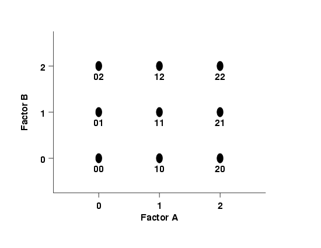

|
5.
Process Improvement
5.3. Choosing an experimental design 5.3.3. How do you select an experimental design?
|
||||||||||||||||||||||||||||||||||||||||||||||||||||||||||||||||||||||||||||||||
| Three-level designs are useful for investigating quadratic effects | The three-level design is written as a 3k factorial design. It means that k factors are considered, each at 3 levels. These are (usually) referred to as low, intermediate and high levels. These levels are numerically expressed as 0, 1, and 2. One could have considered the digits -1, 0, and +1, but this may be confusing with respect to the 2-level designs since 0 is reserved for center points. Therefore, we will use the 0, 1, 2 scheme. The reason that the three-level designs were proposed is to model possible curvature in the response function and to handle the case of nominal factors at 3 levels. A third level for a continuous factor facilitates investigation of a quadratic relationship between the response and each of the factors. | |||||||||||||||||||||||||||||||||||||||||||||||||||||||||||||||||||||||||||||||
| Three-level design may require prohibitive number of runs | Unfortunately, the three-level design is prohibitive in terms of the number of runs, and thus in terms of cost and effort. For example a two-level design with center points is much less expensive while it still is a very good (and simple) way to establish the presence or absence of curvature. | |||||||||||||||||||||||||||||||||||||||||||||||||||||||||||||||||||||||||||||||
| The 32 design | ||||||||||||||||||||||||||||||||||||||||||||||||||||||||||||||||||||||||||||||||
| The simplest 3-level design - with only 2 factors |
This is the simplest three-level design. It has two factors, each at
three levels. The 9 treatment combinations for this type of design
can be shown pictorially as follows:
FIGURE 3.23: A 32 Design Schematic  A notation such as "20" means that factor A is at its high level (2) and factor B is at its low level (0). |
|||||||||||||||||||||||||||||||||||||||||||||||||||||||||||||||||||||||||||||||
| The 33 design | ||||||||||||||||||||||||||||||||||||||||||||||||||||||||||||||||||||||||||||||||
| The model and treatment runs for a 3 factor, 3-level design |
This is a design that consists of three factors, each at three levels.
It can be expressed as a 3 x 3 x 3 = 33 design. The model for
such an experiment is
where each factor is included as a nominal factor rather than as a continuous variable. In such cases, main effects have 2 degrees of freedom, two-factor interactions have 22 = 4 degrees of freedom and k-factor interactions have 2k degrees of freedom. The model contains 2 + 2 + 2 + 4 + 4 + 4 + 8 = 26 degrees of freedom. Note that if there is no replication, the fit is exact and there is no error term (the epsilon term) in the model. In this no replication case, if one assumes that there are no three-factor interactions, then one can use these 8 degrees of freedom for error estimation. In this model we see that i = 1, 2, 3, and similarly for j and k, making 27 treatments. |
|||||||||||||||||||||||||||||||||||||||||||||||||||||||||||||||||||||||||||||||
| Table of treatments for the 33 design |
These treatments may be displayed as follows:
|
|||||||||||||||||||||||||||||||||||||||||||||||||||||||||||||||||||||||||||||||
| Pictorial representation of the 33 design |
The design can be represented pictorially by
FIGURE 3.24 A 33 Design Schematic
|
|||||||||||||||||||||||||||||||||||||||||||||||||||||||||||||||||||||||||||||||
| Two types of 3k designs |
Two types of fractions of 3k designs are employed:
|
|||||||||||||||||||||||||||||||||||||||||||||||||||||||||||||||||||||||||||||||